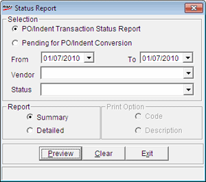
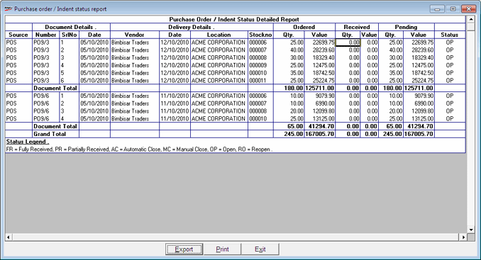
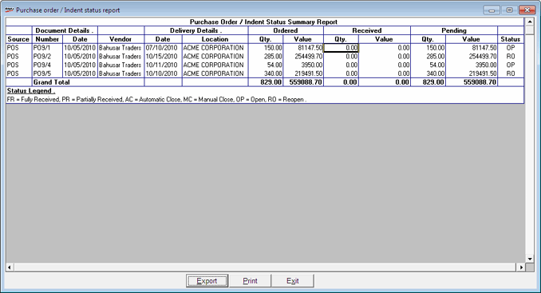

These reports give the current status of various purchase orders generated during a specified period. Reports are generated based on the status of the PO viz, Fully Received, Partially Received, Automatic Close, Manual Close, Open or Reopen.
The generated status report displays source of the PO, PO number, date, vendor on whom the PO is generated, delivery date, location of delivery, order quantity, received quantity and status of the PO.
How to reach: Stock > Purchase Order > Status Report
The PO/ Indent Status Report window is displayed.

Selection: Select the date range, i.e., From and To date, for report generation
PO/Indent Transaction Status Report: Select to display the transaction status of the PO/ Indents
Pending for PO/Indent Conversion: Select to display details of PO/ Indent pending conversion
Vendor: Select the vendor from the drop down list
Status:Select the status of transaction from the drop down list such as Fully Received, Partially Received, Automatic Close, Manual Close, Open or Reopen to generate the report based on the selected status.
Note: If the Vendor and/or Status is not selected for the PO/Indent Transaction Status Report, then the report will be generated for all POs available in the selected date range.
Report
Summary: Click for a summarised report
Detailed: Click for a detailed report
Print Option
Code: Click to print report based on code
Description: Click to print report based on description
Note: In Summary report, details of each purchase order appear in a single line. In Detailed report the complete list of inventory is displayed item-wise.
A sample detailed report is displayed as shown.

A sample summary report is displayed as shown.
